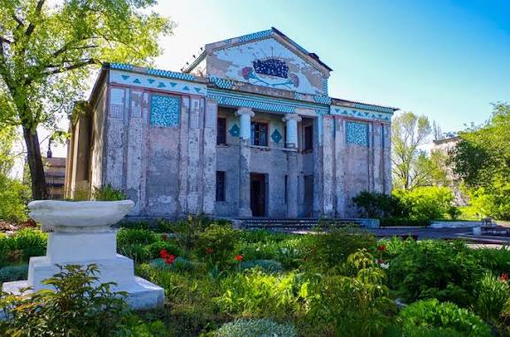
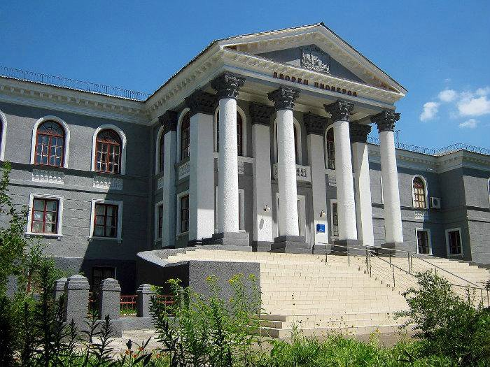
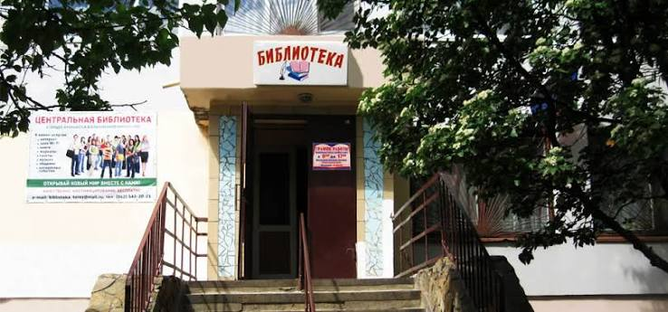

Дворец культуры
Главная культурная площадка города, где проводятся концерты, театральные постановки, выставки и городские праздники.

Главная культурная площадка города, где проводятся концерты, театральные постановки, выставки и городские праздники.

Музей хранит экспонаты, посвящённые истории шахтёрского края, быту и культуре жителей Тореза.

Крупнейшая библиотека города, фонд которой насчитывает тысячи книг и периодических изданий.
Культура — это то, что остаётся, когда всё остальное забыто.
Эдуард Эррио